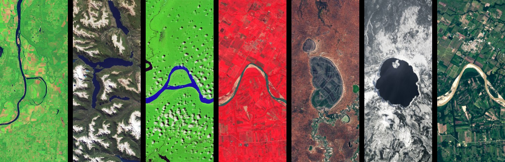
I'm an Agricultural Business Management student at NC State, working at the intersection of GIS, agriculture, and civic technology.
I grew up going to state parks with my parents most weekends, my parents wanted to inspire a love in me for nature but also for learning about the world around me. Somewhere in those trips, watching how a trail wound around a ridge or why a river cut where it cut, I got interested in why places look the way they do. There's a photo of me at maybe seven years old holding up a world map almost as big as I was, grinning like I'd just discovered something nobody else knew. In a lot of ways I haven't stopped holding up that map since. It just got more accurate, and I got better at explaining why it mattered.
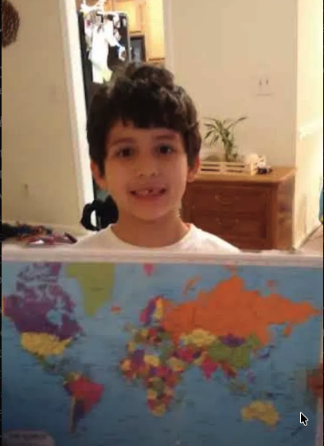
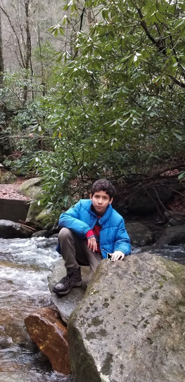
By middle school I was drawing maps of my own neighborhood, then my community, then my city. Eventually I started drawing plans for how I wanted them to look instead, my own version of EPCOT, sketched out long before I had the tools to actually build any of it.
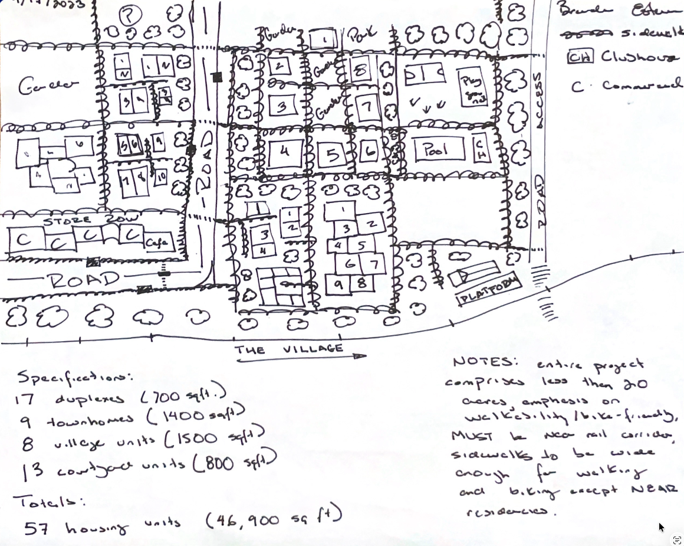
I always loved learning, and the questions kept multiplying. Why were places the way they were. Why did problems cluster where they clustered. How did all the systems underneath a city actually fit together. I wanted to understand it all and eventually do something with that understanding, help build better communities, teach people about the world, make it a better place to learn, work, and live. I didn't know where to start. I just knew I wanted to get there.
I found my way in almost by accident, scrolling through a website and landing on a Community Mapping Club. A short presentation from a few kids not much older than me was all it took. I was hooked. I did my first research project soon after, learned everything I could get my hands on, and eventually made it to Esri's User Conference and Education Summit in 2024.
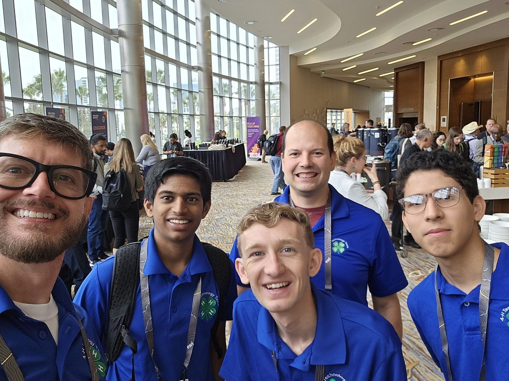
At some point I got good enough that adults started asking me how to teach it to other kids. My first real presentation was in January 2025, a room full of strangers, a StoryMap I'd finished on the drive there, and a very real fear of forgetting everything I meant to say. It wasn't perfect. But it taught me something I still carry, that teaching GIS isn't just about the tool. It's about showing people how much better they can see the world, and the decisions in it, once they know how to look.
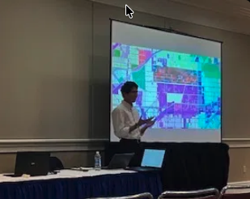
Then came a TEDx talk on how young people could use GIS to make the world better. I was terrified the entire walk to the podium. But somewhere in the middle of it, I looked out and saw my parents looking back up at me, and I understood what the moment actually was. My mom immigrated from Mexico. My dad grew up in a working class family outside of Miami. I'm the first person on my mom's side of the family to go to college. Standing on that stage wasn't just about GIS. It was standing somewhere I don't think either of them could have pictured for me when they were my age, and I carry that history with me, not as pressure, but as something I'm proud to build on top of.
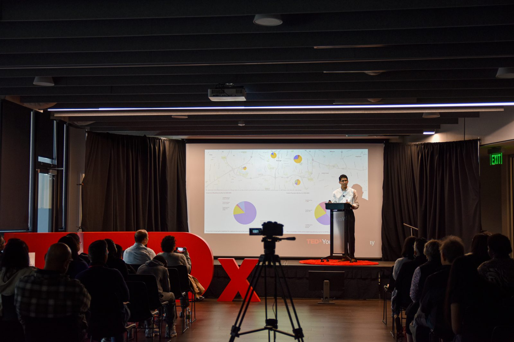
That momentum carried into Esri's User Conference in 2025. When I joined in 2024, I'd been one of just two youth representing the National 4-H Geospatial Leadership Team. The team was struggling then, attendance was low, recruitment had stalled, and I came home from that trip determined to change it. With my peers, we worked over the following year. We rebuilt how the team onboarded new members and trained them, and by the time UC 2025 came around we showed up eight strong, active in three states, with youth leading original research in agriculture, climate, finance, and healthcare.
I presented NOURISH and a session called Learning by Mapping alongside my mentor, Dr. Thomas Ray, on what actually works when teaching GIS. It wasn't just handing someone software. It's helping them use mapping to explore what they already care about, so they see themselves in the work. I also got to write about the National 4-H Geospatial Leadership Team for Esri Press, which was its own kind of full circle. There was another one that week too. Our team took a photo with Dr. Jack Dangermond, the founder of Esri, a strange thing for a program that started back in the early 2000s to still be standing in front of.
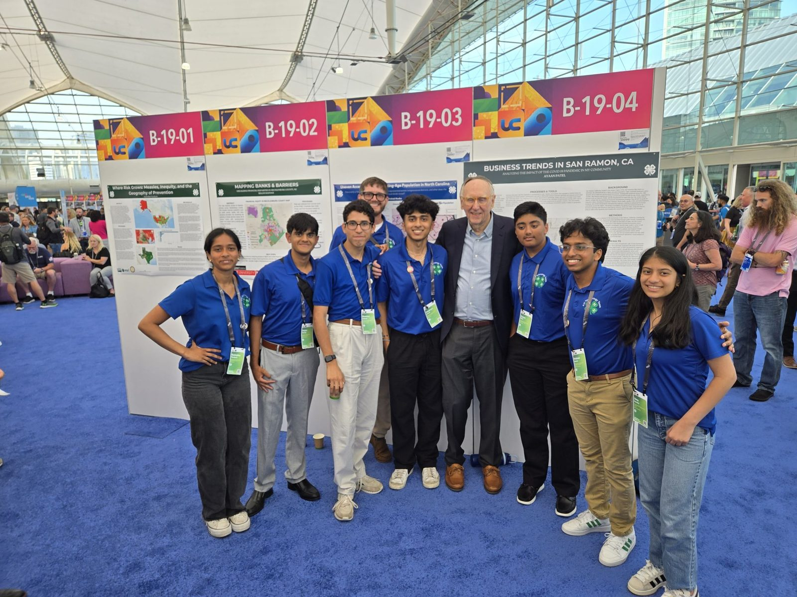
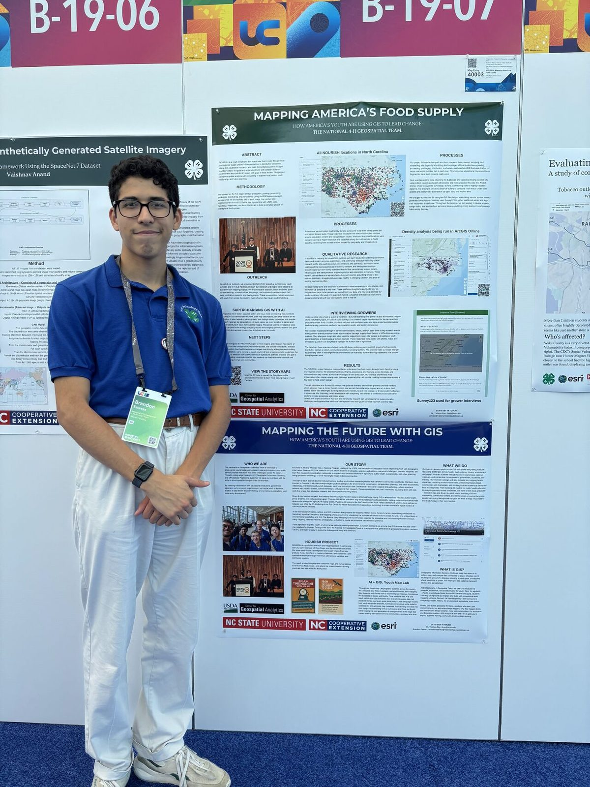
From there, it kept compounding. I helped organize the inaugural CAPS MUN, the first GIS integrated Model UN conference in the country, and stood in that auditorium with Representative Phil Rubin as our opening speaker, watching an idea that started as a Google Doc become something 200 delegates actually showed up for. It taught me that the hardest part of building something isn't the first idea. It's earning enough trust that other people are willing to build it with you. It was also probably the first time that hundreds of people, not just students but parents and faculty, saw firsthand what this tool could actually do.
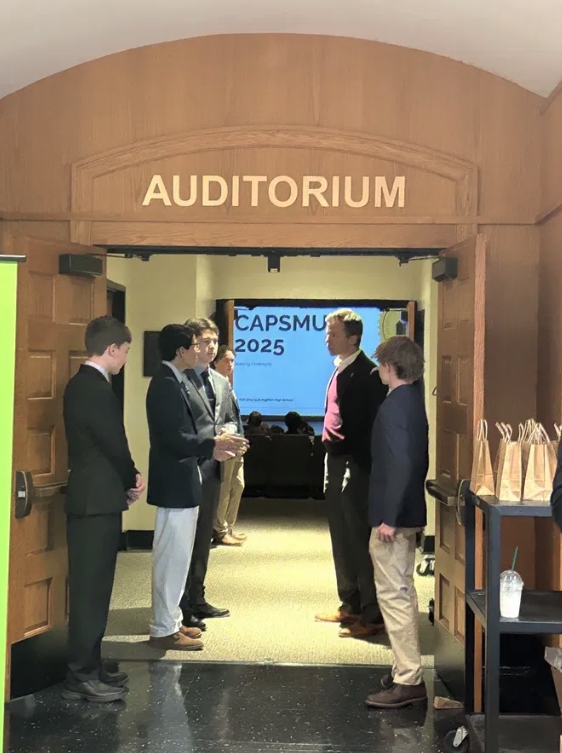
Teaching has been the throughline the whole way. The NOURISH work itself involved mapping North Carolina's food systems from the ground up, interviewing farmers, groundtruthing data, collecting and analyzing thousands of points to build a clearer picture of how food actually moves through this state, a project with the USDA, University of Kansas, UCSF, UCSD, and NC State.
A year later, I got to hand that knowledge to a room full of high schoolers. I spent a week running a full GIS curriculum for a classroom of students, condensing two years of what I'd learned into five days. By the end of it, they'd learned ArcGIS Online, run routing algorithms, built scenario models, made their own StoryMaps, and produced projects tracing where their own ingredients came from, mapping the same kind of interconnected supply chains I'd studied with NOURISH, but this time it was their research, their questions, their maps.
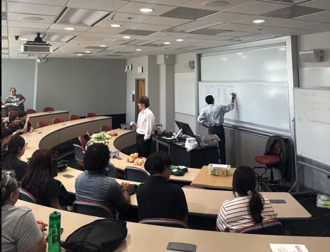
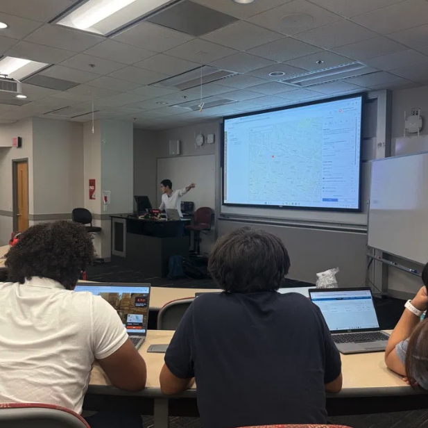
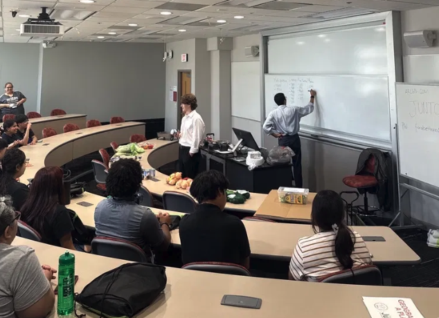
That week is probably the closest I've come to doing exactly what I want to do with my life. I intend to pursue my education in geography, education, and GIS to fulfill my core goal: to ensure that everyone gets the same access to opportunities, knowledge, and the tools to better their own lives.
GIS work happens almost entirely on a screen, so I keep one habit that doesn't — a running collection of Field Notes memo books. Drawings, observations, the first rough sketch of a project idea before it ever touches ArcGIS.
Photos and sketches from those memo books are pinned to the map here, tied to wherever they were actually written.